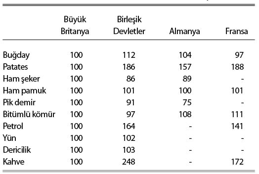

\1
V. Bölüm
İkincil Fiyat Düzeylerinin Çokluğu
Fiyat düzeyleri arasındaki ayrımın öncüsü Edgeworth olmuştur. Fiyat endeksi değerleriyle ilgili derinlemesine ilk tasnif, British Association (1887-1889 dönemi) için onun tarafından hazırlanan bilgi notlarında yer alır ve hâlâ konuyla ilgili en önemli değerlendirmedir. Edgeworth orada başlıca altı tür ayırt eder, sermaye (capital) standardı, tüketim (consumption) standardı, para-birimi (currency) standardı, gelir (income) standardı, tanımsız (indefinite) standart ve üretim (production) standardı. Edgeworth, kırk yıl kadar sonra (Economic Journal, vol. xxxv, (1925), s. 379), başlıca endeks değerlerini üç ana tür olarak tasnif etmiştir, refahı temsil eden endeks değerleri, tartısız (ağırlıksız) endeks değerleri ve emek standardı. Bu üç kategoriden birincisi ve üçüncüsü, daha önce tanımlanan şekliyle tüketim ve kazanç standartlarının birer varyantıdır. Hakkında Edgeworth ile temelden farklı görüşte olduğum ikincisi, VI. Bölümün ikinci yarısında ele alınacaktır.
Ancak, paranın tümüyle tüketim yahut tümüyle emek üzerindeki genel satın alma gücünü gösteren temel fiyat düzeyleri dışında, örneğin, öncelikli toptan eşya ürünleri ya da esham ve tahvilat vb. gibi, belli belli amaçlar için satın alma gücüne karşılık gelen çeşitli ikincil fiyat düzeyleri de söz konusudur. Dahası, bu kısmi ancak az ya da çok genellenmiş fiyat düzeylerine ek olarak, belli amaçlar için veya daha genel nitelikte fiyat düzeylerinin bileşenleri olarak faydalı, bir dizi yardımcı fiyat düzeyi daha söz konusudur. Böyle pratik amaçlar açısından en işe yarar olanlar, belli işler ve hizmetler için yüksek tamlıkla ve duyarlılıkla şu sıralarda hazırlananlardır; örnek olarak navlun, demir yolu bedelleri, pamuklu dokuma, yünlü dokuma, inşaat malzemeleri, demir-çelik mamulleri, elektrik enerjisi, hububat, tavukçuluk ve süt ürünleri ve benzer diğer endeksler verilebilir. Genel satın alma gücünü ölçmek üzere böyle alt-endekslerden oluşan bir kombinasyon, Mr. Snyder’ın elde daha iyisi olmadığı için başvurduğu toptan eşya ve ücret endeksleri gibi genel endekslerden oluşan bir kombinasyondan daha isabetli olabilir.
IV. Bölümde ele alınan tüketim standardı ile VI. Bölümde inceleyeceğimiz döviz standardı dışındaki standartlardan önemleri itibarıyla ayrıca değinilmeye değer iki tanesi şunlardır:
(i) toptan eşya standardı ve
(ii) uluslararası standart.
I. Toptan Eşya Standardı
Toptan eşyayla ilgili fiyat düzeyi, temel ürünlerin toptan fiyatlarından oluşur. Bunlar bazen gıda ve eşya (materials) şeklinde, bazen de tarımsal ve tarım-dışı şeklinde gruplanır. Hemen hemen tamamı, tüketiciye giden yolda henüz üretim sürecinde bulunan ve imalat yahut vaziyeti açısından, tamamlanmanın farklı aşamalarındaki ham madde fiyatlarına dayanır; dolayısıyla kabaca, ilerideki bölümlerde işletme sermayesi diyeceğimiz kalemlerin, yani, bitmemiş (unfinished - tamamlanmamış) malların fiyat düzeyine karşılık gelirler.
Eskiden toptan eşya endeksi değerleri ya tartısızlardı, yani başlıca ana ürünler, ya eş önemde görülüyordu ya da, örneğin, aslında tenekenin on katı önem taşıması gereken buğdayın iki ya da üç kat önemli sayılması gibi, kabaca tartılandırılmışlardı. Bununla birlikte daha yakın zamanlara ait en iyi endeks değerleri, ülke ekonomisindeki farklı kalemlerin üretim sayımlarıyla ortaya konulan nispi önemleri temelinde, titizlikle ve bilimsel olarak tartılandırılmıştır. Bugüne kadar ortaya çıkan bu gelişmelerin neticesi, Birleşik Devletler İşgücü Bürosunun mükemmel toptan eşya endeksidir. Revize edilmiş son hâli (Eylül 1927), bilimsel olarak tartılandırılmış 550 münferit mala dayanmaktadır.
İlk endekslerin tamamına yakını –Jevons’ın, Soetbeer’in, Sauerbeck’in ve Economist’in endeksleri gibi– toptan eşya endeksidir ve bunun başlıca sebebi de, eskiden, bir dizi yıl için yeterli istatistik derlenebilen yegâne tür olmasıdır. Bunlar, başka endeks olmayışı nedeniyle, para sorunlarıyla ilgili olarak hem eğitimliler arasındaki, hem de popüler tartışmalarda fazlaca derine girmeden “paranın değeri”nin göstergesi kabul ediliyorlardı.
Pek çoğumuz, Sauerbeck’inki yahut Economist’inki gibi –zaten daha iyileri olmayan– endeksler ile paranın satın alma gücü arasındaki fiili sapmaların, hesaplanabilmeleri hâlinde ortaya çıkacak teorik ve pratik önemleri konusunda yeterince uyarılmadan, bu endeksleri gönül rahatlığıyla kullanmak üzere yetiştirildik. Bu gönül rahatlığı en çok, bağımsız fiyat yelpazesi yeterince geniş herhangi bir endeksin, istatistiki kuramsal sebeplerden dolayı, pratikte diğerleriyle aynı hesaba geleceği gerekçesiyle farklı fiyat düzeyleriyle uğraşmanın gereksiz olduğu sonucuna varan ve seçkin bir otoritenin ortaya attığı, kanaatimce yanlış olan doktrinden güç alıyordu. Bu yaklaşım popüler iktisatta öyle derinlere işlemiştir ki hâlâ yaygın bir şekilde hüküm sürmektedir ve hatırı sayılır yanlış anlamaların kaynağıdır. Bununla ilgili olduğunu düşündüğüm hataları VI. Bölümün ikinci kısmında ele alacağım.
Toptan eşya standardıyla tüketim standardı arasındaki muhtemel uyuşmazlığın sebepleri epeyce ayrı iki türdendir. Şimdiden bazı karışıklıkları gidermek –tezimizin sonraki basamaklarının menfaati açısından– faydalı olacaktır. Bu iki standardın farklı dalgalanmaları mümkündür, çünkü, ya mallar ilkinde bitmemiş ve ikincisinde bitmiş hâldedirler yahut farklı oranlarda hesaba katılmışlardır; ya da ilkinin bitmemiş saydığı mallar, fiyatları itibarıyla, ikincisinin bitmiş saydıklarına göre farklı tarihte var olması beklenen bitmiş mallara karşılık gelir.
Farklı harcama nesnelerinin toptan eşya ve tüketim standartlarına göre değişen önemi itibarıyla, birincide –tartılandırma farklarından ayrı olarak– kişisel hizmetlerin, pazarlama masraflarının büyük kısmının ve sabit tüketim sermayesinin (fixed consumption capital) –örneğin, ev-oda gibi– kullanılmasıyla türetilen ve önemli bir bileşenini faiz haddinin oluşturduğu masrafa katılan tüketim payının, tümden ihmal edildiği ortadadır. Hâlbuki bu kalemler, kendi içlerinde, tüketici harcamalarının büyük kısmını teşkil ederler. Dolayısıyla, bunların uzun dönemde birlikte hareket etmelerini beklememiz için hiçbir neden yoktur.
Ayrıca, yüksek derecede ihtisaslaşmış kalemlerin fiyatlarından daha fazla etkilenmesi nedeniyle, toptan eşya endeksinin, nakliye ve pazarlama gibi görece az ihtisaslaşmış kalemleri dikkate alan bir tüketim endeksine kıyasla, daha şiddetli dalgalanmasını beklemek için haklı bir gerekçe vardır. Örneğin, çiftçinin karşısında gördüğü tarımsal ürün fiyatlarının değişkenliği, aynı ürünlerde tüketicinin karşılaştığı nakliye ve pazarlama giderleri bindirilmiş fiyatların değişkenliğinden çok daha büyüktür.7
Toptan eşya ve tüketim standartlarının dalgalanmalarındaki farklılıkların kısa döneme özgü bir sebebi de, bitmemiş, yani tüketilmeye müsait olmayan malların, bitmiş malların bileşeni olmalarından ileri gelen müstakbel değerleri dışında bir değer taşımamaları ve bu nedenle bitmiş malların bugünkü değerlerini değil, tamamlanmaları beklenen tarihteki değerlerini yansıtmalarıdır. Toptan eşya endeksinin, ileri tarihli tüketim endeksinin beklenen düzeyine tabi olmasının taşıdığı pratik önem, kredi çevrimini tartışırken karşımıza çıkacaktır.
II. Uluslararası Standart
Modern ekonomik dünyanın ülkeler arası ticaretinde navlun bedelleri, tarifeler ve diğer engeller, bir dizi malın bir ülkeden diğerine serbestçe akışını önlemekte yeterli olmamaktadır. Her ülke için, kendi uluslararası endeksi diyebileceğimiz bir endeks vardır. Pratikte bu endeks, başta hammaddeler olmak üzere uluslararası bir piyasası olan belli başlı standart mallardan derlenir ve bunların ağırlıkları da ilgili ülkenin ticaretindeki önemlerine göre belirlenir. Endeksin eksiksiz hâli, uluslararası ticarete konu olan imalat kalemlerini –mesela pamuklu ürünlerini– de kapsayacaktır. Bu endeks, belli bir memleket için, günümüzde korumasız diye tabir edilen fiyat düzeyine karşılık gelir.
Demek ki, nakliye giderleri ve tarifeler hesaptan düşüldükten sonra, uluslararası bir endeksteki her bileşenin fiyatı, her ülke için aynı paraya indirgendiğinde, aynı olacaktır. Dolayısıyla, bir ülkenin fiyatlarına göre hazırlanan bir uluslararası endeksin, başka bir ülkenin fiyatlarına göre hazırlanan aynı endekse oranındaki dalgalanmalar, nakliye maliyetlerindeki ve tarifelerdeki farklılıkların giderilmesi şartıyla, bu iki ülkenin paraları arasındaki kur dalgalanmalarıyla uyumlu olmak durumundadır. Bu da, söz konusu ülkelerin paraları arasındaki kur ile o paraların uluslararası ticaretteki başlıca kalemler itibarıyla mukayeseli satın alma gücünün aynı paritede olacağı anlamına gelir.
Öte yandan, uluslararası piyasası olan kalemler için bile olsa, belli bir dönem boyunca tarifeler ve nakliye maliyetleri ile ilgili zorunlu düzeltmelerin ciddi boyutlara varabileceğini de gözden ırak tutmamak gerektiği ortadadır. Bu durum, Mr. F. C. Mills (The Behaviour of Prices, bölüm II) tarafından toplanan verilerden derlenen aşağıdaki tabloda açıkça görülmektedir:
BÜYÜK BRİTANYA’DAKİ DEĞİŞİM ESASINDA
1896’YA KIYASLA 1913 YILI FİYATLARINDAKİ DEĞİŞİM8

Tablodaki sayılardan birkaçı muhtemelen yanlıştır ve birbirleriyle tam karşılaştırılamaz. Örneğin uluslararası ticaretteki yeri tartışmalı olan patatese ait Britanya değerinin, mahsule yahut mevsime ait geçici durumlardan ciddi ölçüde etkilenmiş olması muhtemeldir. Buna rağmen tablodan çıkan genel ders ortadadır. Pamuk, yün ve deri vb. gibi tarife dışı ve dolaşımı rahat ham maddelerin uluslararası pariteleri gayet kararlı bir şekilde seyretmektedir. Ancak buğday, pik demir vb. gibi diğer önemli malların fiyatları, ülkeler itibarıyla bariz bir uyumsuz eğilim gösterebilmektedir.
Bir memlekette paranın satın alma gücündeki hareketler ile uluslararası fiyat düzeyindeki hareketler arasında dikkate değer farklar görüldüğünde, bu durumun yerel fiyat hareketlerinin ve parasal dengenin yorumlanması açısından önem arz eden bir konu olması muhtemeldir. Benim bu bölümü yazdığım tarihte (1927), günün en ilginç parasal olgularından biri, uluslararası fiyat düzeylerinin, pek çok ülkede paranın yerel satın alma gücü endeksine nazaran genel düşme eğilimidir.
İktisadi değerlendirmede hatırı sayılır önemi olan bir diğer olgu da, bir ülkenin ticaretinde uluslararası fiyat düzeyinin ithalata dâhil kısmının ihracata dâhil kısmına göre hareketidir. Bu iki hareket arasındaki oran, ticaret hadleri diyebileceğimiz, ihracat ve ithalat ile ilgili türev mahiyetindeki göreli fiyatların endeksini verir ki o da bir birim yabancı mal edinmek için teklif edilecek yerli malı miktarının ölçüsüdür. Profesör Bowley’nin gösterdiği üzere, bu endeks bilhassa, ithal ve ihraç edilen mal gruplarının paylarındaki sık ve hızlı dalgalanmalara bağlı kompozisyon değişiklikleriyle ilgili sorunlara açık durumdadır. Endeks, ilk kez Giffen’ın Board of Trade (Sanayi ve Ticaret Bakanlığı) için yaptığı hesaplamalara girmiştir (Parl. Zabıtları 1878-79, no: 2247, ve müteakip yıllar).9
Dövizler konusunda geçtiğimiz yıllarda epeyce tartışılmış olan satın alma gücü paritesi kuramı, neticede, en katıksız şekliyle, iki para birimi arasındaki kurun, bir ülke fiyatlarına göre hesaplanan bir endeksin, diğer ülke fiyatlarına göre hazırlanan aynı endekse oranıyla ifade edilen uluslararası endeksle aynı şekilde hareket ettiğinin tekrarından başka bir şey değildir.
Aslında hiç de klişeden ibaret olmayan bu durum, bizzat paranın satın alma gücü meselesine –bence gayrimeşru şekilde– uzanmış olmasa, Profesör Cassel’ın otoritesini de arkasına almasına rağmen, gördüğü kadar ilgiyi bile çekmeyebilirdi. İthalat ve ihracat fiyatlarının başka fiyatlara tepki vermesi hasebiyle, genelde, bir ülkenin uluslararası standardındaki büyük değişmelerle tüketim standardındaki değişmeler arasında bir korelasyon olacaktır. Ancak, iki ülke arasındaki döviz kurundaki değişmelerle, birbirlerine göre tüketim standartlarındaki değişmeler arasında, şu ya da bu ölçüde belirlenmiş, zorunlu yahut yakın bir ilişki, uzun dönem için bile ortaya konulmuş değildir; böyle olduğunu varsaymak, ticaret hadlerinin değişme ihtimalini göz ardı eder.
Satın alma gücü paritesi kuramının prestijinin, klişeyi biraz açan niteliği itibarıyla, üstünde durduğu kısmen ham nitelikteki kurama bağlılığı, bazı en yaygın ülke endekslerine tatbikinin getirdiği sözde doğrulamalara bağlılığından daha fazla olmamıştır.10 Bununla birlikte söz konusu doğrulamaları, eskiden beri gelen toptan eşya endekslerinin, uluslararası ticaretteki belli başlı mallardan oluşmasıyla açıklamak mümkündür. Zira bunun, söz konusu malların yıllar itibarıyla uzun serilere sahip fiyat kotasyonları olması gibi gayet anlaşılır bir sebebi vardır. Sırf böyle maddelerden oluşsalardı ve tartılandırma sitemi de her bir durumda11 aynı kalsaydı, bu doğrulamalar neredeyse kusursuz olurdu. Çünkü satın alma gücü paritesi kuramı, sadece uluslararası ticarete giren kalemler endeksi için değil, fakat, nakliye maliyetlerindeki vb. diğer farklılıklara ilişkin düzeltmelerin yapıldığı kabulüyle, o kalemlerin tek tek her birinin fiyatına tatbiki hâlinde de doğrudur. Ancak, bu endeks değerlerinin genelde ülkelerası ticarette serbest dolaşmayan iki yahut üç malı içermesi ve hem tartılandırma sisteminin hem de seçilen kalemlerin vasıflarının ve düzeylerinin çeşitliliği nedeniyle, kuramı prima facie ilginç kılan, “doğrulamalar”daki uyuşmazlığın bu derecesi olmuştur.
Öte yandan, mukayesenin gerçekten de farklı ülkelerdeki satın alma gücü esas alınarak yapıldığı durumlarda, dövizle ilgili satın alma gücü paritesi kuramı, olgularla desteklenmemiştir. Ben bu kuramın,12 şimdi düşündüğümden daha ilginç olduğunu sanırdım. Bu çerçevede gerçekten tartışmaya değer meselenin, çok daha karmaşık bir problem olan, fiyat düzeylerinin ülkeler arasında yayılımı olduğu kanısındayım. Profesör Cassel’ın kuramının cari gelişmelere yönelik son uygulamaları, ticaret hadlerinin değişmediği şeklindeki varsayımı nedeniyle, bence geçerliliğini yitiriyor; zira –örneğin dış yatırım hızındaki farklılıklar sonucunda– değişebilir olmaları, XXI. Bölümde göreceğimiz gibi, bir ülkenin dış dengesini sürdürmesinin önündeki en büyük engellerden biridir.
Çoğu kez, fiyat endeksi olarak tarif edilen muhtelif endeksleri, yeterli niteliklere sahip olmadan yayınlamanın tehlikeli yanlışlara götüreceği açıktır. Bizzat Profesör Cassel, belli bir fiyat düzeyine, daha doğrusu benim uluslararası diye adlandırdığım fiyat düzeylerine has sonuçları kapsamının ötesinde uygulamakla, kanaatimce, bu yanlışın kıyısına gelmiştir. Büyük Britanya’nın altın standardına dönüşü sırasında, hem Hazine hem de Bank of England, İngiliz uluslararası endeksiyle hemen hemen aynı olan toptan eşya endeksinin altın mübadelesindeki hareketlere hızla uyarlanmasına –ki uluslararası bir endeks için zaruridir– bakarak, “fiyatların geneli” için de öyle olduğu şeklindeki yanlış sonuca varmışlardı. Ayrıca, kredi çevrimini ve, daha doğrusu, iktisadi kuramın kısa dönemli olgularına ait kısımlarını etüd edenler bazen, uzun dönemde birlikte hareket etmeleri muhtemel diye fiyat düzeyleri arasındaki geçici farklılıkları gözden kaçırarak, sorgulanması böyle bir kurama düşen olguları yok saymışlardır.
Bununla birlikte, endekslerin dayandığı istatistiksel verilerin artan yeterliliği ve derlendikleri fiyat düzeylerinin çeşitliliğinin savaştan beri muazzam artış göstermesi, Sauerbeck’inki veya Economist’inki gibi bir fiyat endeksinin, derlendiği özgül bağlam dışında da paranın değerini az-çok yansıtabileceği şeklindeki yaygın anlayışı yavaş yavaş yıkmaktadır. Bence resmî istatistik kurumlarının görevi, öncelikle gerçekten iyi bir satın alma gücü endeksi hazırlamak, ardından da (tercihen ticaret örgütlerinin ve uzmanların yardımıyla), çeşitli birleşimlerle belli bir amaca veya duruma uygun daha kompleks endeksler kurmaya elverişli, alana özgü ikincil ve alt endekslerin çeşitlerini ve sayılarını çoğaltmak olmalıdır.
7 Inter-relationships of Supply and Prices (Arz ve Fiyatlar arasındaki ilişkiler), G.F. Warren and “F.A. Pearson, Economic Journal (1929) s.92 hakkındaki değerlendirmemle kıyaslayın [JMK, vol xı).
8 Örneğin, bu dönemde bir malın fiyatı Büyük Britanya’da yüzde 10 ve Birleşik Devletler’de yüzde 20 artmış ise, endeksimiz B.D. için 109, yani 120/110x100’e eşit olur.
9 Bu endeks hakkında Büyük Britanya’yla ilgili tartışmalar için bkz. Bowley, Economic Journal, vol xiii, s. 628; Keynes, Economic Journal, vol xxii, s. 630, vol xxxiii, s. 476; Beveridge, Economica, February 1924, s. 1; Robertson, Economic Journal, vol xxxiv, s. 286; Taussig, Economic Journal, vol xxxv, s. 1.
10 Tract on Monetary Reform (Para Reformu Üzerine) adlı çalışmamda bazı örnekler vermiştim: s. 99-106 [JMK, vol iv, s. 81-7]
11 Yerel toptan eşya endekslerinin kullanıldığı durumlarla ilgili olarak, farklı tartı sistemleri nedeniyle oluşan hatalar, Profesör Bowley’nin International Comparison of Price Changes ile Comparative Price Index-Numbers for Eleven Principal Countries (London and Cambridge Economic Service, özel notlar, no. 19, July 1926 ve 24, July 1927) adlı çalışmalarında tartışılmıştır.
12 Kuramın daha tam bir değerlendirmesi için bkz: Tract on Monetary Reform, s. 87 et seq. Ayrıca Cassel’in Money and Foreign Exchange after 1914 ve Dr. Keilhau, Economic Journal, vol xxxv (1925), s. 221.